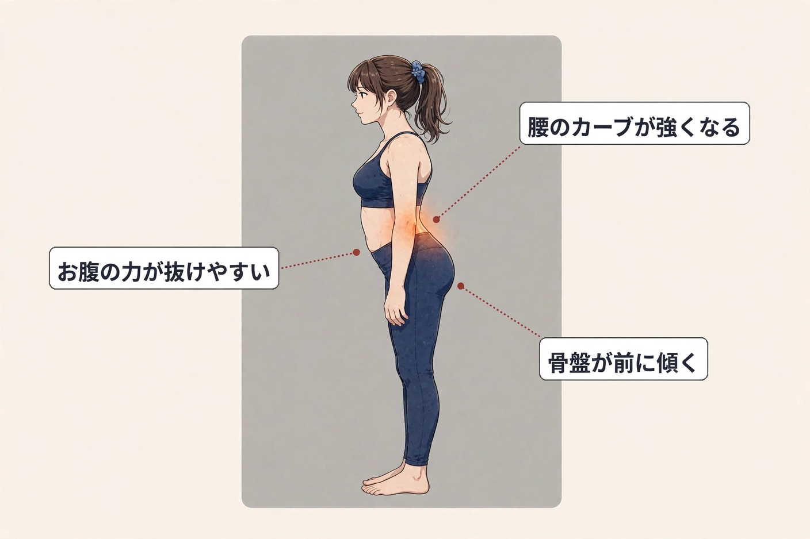

反り腰・ぽっこりお腹
美容整体ステラ・ポラリス東三国｜大阪市淀川区東三国・東三国駅徒歩5分・女性向け

筋トレしても凹まないお腹は、骨盤の傾きから
反り腰は、骨盤が前に傾き、腰のカーブが強くなった姿勢です。骨盤が前傾すると内臓の位置が下がりやすく、下腹が前に出て見える一因になると言われています。腹筋運動をしてもお腹の見た目が変わりにくいと感じる方の中には、筋力そのものより姿勢の傾きが関係している場合があります。また、反り腰は腰への負担や太ももの前の張りとも関わりやすい姿勢です。このページでは、反り腰の背景にある仕組みと、骨盤の傾きが整った姿勢を目指す当サロンでのケア、ご自宅でできるセルフケアをご案内します。まずは下のチェックで、ご自身の状態を確かめてみてください。
ご予約はこちら（Coubic）こんなお悩みありませんか
- 体重は変わらないのに、下腹だけぽっこり出て見える
- 壁に背をつけると、腰の後ろに大きなすき間がある
- 太ももの前が張って、パンツの前側がきつく感じる
- 長く立っていると腰が反って、重だるくなる
- 腹筋運動をしても、お腹の見た目が変わりにくい
- ヒールを履くと、腰の反りが強くなる気がする
- 仰向けで寝ると腰が浮いて、落ち着かない感じがする
当てはまる項目が多いほど、骨盤の前傾が強まり、姿勢から下腹の見え方に影響している目安とされています。お腹そのものではなく、土台である骨盤の傾きがポイントです。次のセルフチェックで、今の腰の反りの傾向を確かめてみましょう。
簡単セルフチェック（壁での腰のすき間チェック）
壁を使った、腰の反りの傾向を知るための簡単な方法です。
- 壁に背を向けて立ち、かかと・お尻・背中・後頭部を壁につけます。
- 腰と壁の間に手を差し入れ、すき間の大きさを確認します。
- 手のひら1枚分より大きくすき間がある場合は、腰の反りが強まっている目安と言われています。
※これは診断ではありません。ご自身の状態の傾向を知る目安としてお使いください。
反り腰・ぽっこりお腹の原因と仕組み
骨盤の前傾とは
骨盤は、体の中心で上半身と下半身をつなぐ土台です。まっすぐ立った姿勢では骨盤はほぼ水平に保たれますが、骨盤が前に傾く「前傾」の状態になると、腰のカーブが強くなり、いわゆる反り腰の姿勢になります。前傾の背景には、太ももの前や腰まわりの筋肉の張りと、お腹やお尻の筋肉の使いにくさといった、筋肉のバランスの偏りがあると言われています。図1のように、骨盤の傾きは腰だけでなく、お腹の見え方や太ももの張りにもつながっていきます。

図1 反り腰の姿勢で起こりやすい変化と、骨盤の傾きが整った姿勢のイメージ。姿勢の状態には個人差があります。
内臓の位置と下腹の見え方
骨盤が前傾すると、骨盤の中に収まっている内臓の位置が下がりやすく、下腹が前に出て見える一因になると言われています。体重や体脂肪が変わっていなくても、姿勢ひとつでお腹の見え方は変わります。腹筋運動をしても見た目が変わりにくいと感じる方は、筋力トレーニングの前に、骨盤の傾きという土台を見直すことが近道になる場合があります。
太ももの前とお腹の筋肉バランス
骨盤を前に引っぱる力として働くのが、太ももの前や股関節の前の筋肉です。座りっぱなしの生活ではこれらの筋肉が縮んだまま固まりやすく、反対に、お腹やお尻の筋肉は使いにくくなりがちです。この前後のアンバランスが、骨盤の前傾を保ってしまう背景になると考えられています。張りやすい部位をゆるめ、使いにくい部位の感覚を取り戻すことが、姿勢づくりの両輪になります。
腰への負担との関わり
腰のカーブが強くなると、腰まわりの筋肉や関節にかかる負担の偏りも大きくなりやすいと言われています。長く立ったあとや、家事で前かがみが続いたあとに腰が重だるく感じる方は、反り腰の姿勢が関係している場合があります。骨盤の傾きが整い、お腹に自然と力が入る姿勢になると、腰まわりの負担感も変わってきます。
セルフケアで足りる場合・サロンケアが向く場合
反りが軽く、ストレッチや姿勢の意識でお腹の見え方が変わる日が多い場合は、まずご自宅でのセルフケアを続けて様子を見る方法があります。一方で、太ももの前や腰まわりが自分ではゆるめにくい、骨盤を立てた正しい姿勢の感覚がつかみにくい、下腹の見え方もあわせて整えたいという場合は、サロンでのケアが向いている目安になります。サロンでは、張りやすい部位をゆるめて骨盤の傾きを整えることで、施術後に「お腹に力が入りやすい」「立ち姿が変わった」と感じやすい状態を目指します。どちらが正解というものではなく、今の状態に合わせて選ぶことが大切です。
当サロンでのケア
当サロンの反り腰ケアは、「骨盤の傾きが整い、お腹に自然と力が入る姿勢」を目指す組み立てです。腰を強く押すのではなく、骨盤まわりのバランスから整え、部位と目的に合わせて3つの手技を組み合わせます。
美容整体：骨盤の傾きを整える手技を行い、立ち姿勢を鏡で確認しながら、お腹に自然と力が入る感覚をお伝えします。パーソナルトレーナーの視点から、姿勢の整え方もご案内します。
アロマオイルマッサージ：骨盤まわり・お腹・太ももの前の固まりやすい筋肉をオイルでゆるめ、前後のバランスが整いやすい状態を目指します。香りに包まれるリラックス感の高いケアです。
もみほぐし：腰まわりやお尻の重だるさの背景になりやすい筋肉をほぐし、動きを引き出すことを目的に進めます。
ケアを通して目指すのは、こんな変化です。
- 骨盤の傾きが整って、下腹がすっきり見える姿勢へ
- お腹に自然と力が入り、立ち姿のラインがきれいに見える印象へ
- 腰の重だるさがやわらいで、長く立ったあとも楽に感じられる状態へ
- 太ももの前の張りがゆるんで、パンツのラインがすっきり見える印象へ
- 姿勢の土台が整い、歩き姿まで軽やかに感じられる体感へ
施術後は立ち姿を鏡で確認しながら、お腹に自然と力が入る感覚を一緒に確かめます。パーソナルトレーナーの視点から、ご自宅で続けやすい姿勢の整え方もご案内します。姿勢のクセは一日で変わるものではありませんが、整った姿勢の心地よさを知ることが、日常の姿勢を見直すきっかけになります。

施術の流れ
ご来店後、気になる部位やお悩み、ご希望の強さなどをうかがいます。完全個室のため、周りを気にせずお話しいただけます。
骨盤の傾きや立ち姿勢、腰の状態などを一緒に確認し、その日の状態に合わせた施術の進め方をご案内します。
美容整体を中心に、ご希望に応じてアロマオイルマッサージ、もみほぐしを組み合わせて進めます。強さは途中でも調整できます。
施術後の状態を確認し、ご自宅で続けやすいセルフケアのポイントをお伝えします。次回の目安についても、ご希望があればご案内します。
料金
| コース | 通常価格 | キャンペーン価格（12/25まで） |
|---|---|---|
| 80分 | 8,000円 | 3,000円 |
| 100分 | 10,000円 | 4,000円 |
| 120分 | 12,000円 | 5,000円 |
クリスマスキャンペーンは12月25日まで、ご新規様もリピーターの方も対象です。施術内容は当日の状態とご希望に合わせて組み立てます。
ご自宅でできるセルフケア
- 骨盤の前後ゆらし体操：仰向けに寝て膝を立て、息を吐きながら腰を床に押し付ける動きをゆっくり5回。朝晩の習慣にすると、骨盤を立てる感覚がつかみやすくなります。
- 太ももの前のストレッチ：立ったまま片足の甲を持ち、かかとをお尻に近づけて太ももの前を伸ばします。左右それぞれ20〜30秒を2セット、1日1〜2回が目安です。
- ドローイン：お腹をへこませるように息を吐き、10秒キープします。5回を1セットとして、座ったままや立ったままでも取り入れられます。
- 立ち姿勢のリセット：壁にかかと・お尻・背中・後頭部をつけて立ち、お腹に軽く力を入れる感覚を1日数回思い出す習慣をつけます。
ご自宅でのケアに：セルフケア資料ライブラリ（無料）
このお悩みに合わせたセルフケアの考え方を、無料の資料ライブラリでご紹介しています。
セルフケア資料ライブラリを開く →
受診の目安
腰の強い痛みや足のしびれ、排尿の異常を伴う場合は、施術の前に医療機関への受診をおすすめします。また、痛みが日ごとに強くなる場合も、まずは医療機関でご相談ください。
よくある質問
Q. 初めてでも大丈夫ですか？
はい。当サロンは完全予約制・完全個室で、1日3組までのご案内です。最初にカウンセリングで姿勢のクセや気になる部位をうかがい、無理のない内容から始めます。施術の前後で立ち姿を鏡で確認しながら「お腹に力が入りやすい」「立ち姿が変わった」といった感覚の違いを一緒に確かめますので、初めての方も安心してご利用いただけます。
Q. 施術は痛いですか？
強さは、ご希望をうかがいながら調整します。腰を強く押すような手技ではなく、骨盤まわりのバランスを整える進め方を大切にしています。感じ方には個人差がありますので、施術中も遠慮なくお声がけください。
Q. コースはどう選べばいいですか？
80分・100分・120分のコースがあり、ケアしたい部位の広さやお時間のご都合に合わせて選べます。反り腰のケアで骨盤まわりから腰、お腹、太ももまでゆっくり整えたい方には、100分が選ばれることが多いコースです。迷われる場合は、ご予約の際にお気軽にご相談ください。
Q. 場所と予約方法を教えてください。
大阪市淀川区東三国、東三国駅から徒歩5分です。完全予約制のため、予約サイト（Coubic）またはLINE公式アカウントからご予約をお願いしています。
Q. 男性も受けられますか？
当サロンは女性向けのため、男性の方は、同じ東三国の男性専用整体院「北辰堂」をご案内しています。
施術者について
平賀建人（施術歴30年）
鍼灸師・登録販売者・アロマセラピスト・パーソナルトレーナーの資格を持ち、美容整体を中心に、アロマオイルマッサージ、もみほぐしを、その日の状態とご希望に合わせて組み合わせて施術します。このページの内容は、施術者の知識と経験をもとに作成しています。

料金・ご予約
ご新規様もリピーターの方も 12/25まで
80分 3,000円／100分 4,000円／120分 5,000円
通常価格は80分8,000円／100分10,000円／120分12,000円です。施術内容はご希望に合わせて組み立てます。
営業時間：月〜土 17:00〜23:00／日 10:00〜23:00（完全予約制）｜電話：080-2468-3086
大阪府大阪市淀川区東三国2丁目25番4号101（東三国駅徒歩5分）